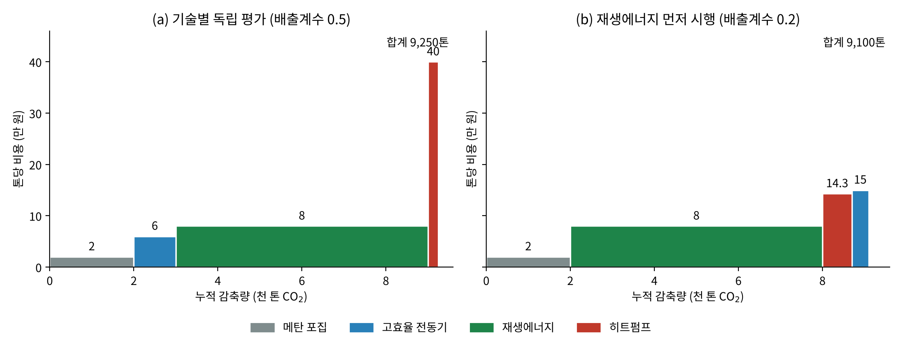
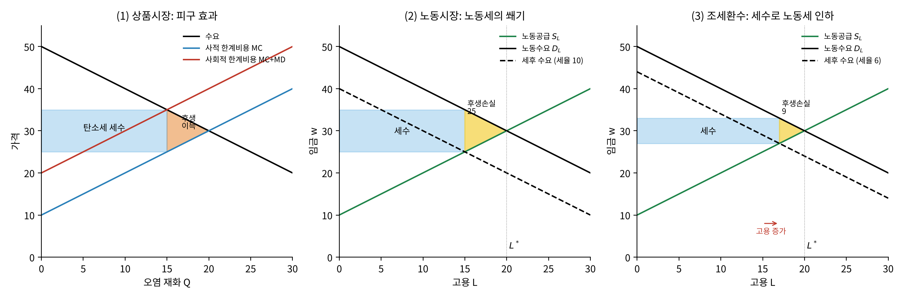

6 온실가스 감축비용
이 장의 지도
5장은 “배출을 줄이지 않을 때의 비용”, 즉 피해와 탄소의 사회적 비용(SCC)을 다루었다. 이 장은 그 반대편인 “배출을 줄일 때의 비용”, 즉 감축비용과 한계감축비용(MAC)을 다룬다. 7장에서는 이 둘이 만나는 지점, 즉 최적 감축 수준을 찾는다. 3장의 그림으로 말하면, 5장이 한계편익 곡선을, 이 장이 한계비용 곡선을 채우는 셈이다.
| 절 | 질문 |
|---|---|
| I. 감축비용의 개념과 크기 | 감축비용이란 무엇이고 얼마나 드는가? 왜 모형마다 다른가? |
| II. 경로의 비용 | 같은 목표라도 언제 줄이느냐에 따라 비용이 어떻게 달라지는가? |
| III. 음(-)의 배출 | 이미 배출된 CO₂를 빼내는 데는 얼마가 드는가? |
| IV. 감축비용의 분배 | 감축비용은 가난한 사람에게 더 무거운가? |
| V. 음의 감축비용과 MACC | 배출도 줄이고 돈도 아낄 수 있는가? |
| VI. 이중배당 | 탄소세 세수를 잘 쓰면 감축비용이 0보다 작아질 수 있는가? |
단열재를 설치하면 공사비가 들지만 난방비가 줄어든다. 석탄발전소를 조기에 폐쇄하면 배출은 감소하지만 아직 사용할 수 있는 설비의 수명을 포기할 수 있다. 감축비용은 설비 가격이나 정부 예산만을 뜻하지 않는다. 감축이 없었을 경우와 비교하여 사회가 추가로 사용하는 자원과 포기하는 기회의 가치다. 비용을 정확히 이해해야 같은 감축 목표를 더 적은 자원으로 달성할 수 있다 (IPCC 2022년; Tol 2023년).
감축비용의 개념
감축비용은 왜 추정하기 어려운가
감축정책은 기업과 가계가 더 비싼 에너지나 기술을 쓰게 만든다. 설비 교체 같은 회계상의 비용은 항목별로 계산할 수 있지만, 고용과 물가의 변화까지 포함한 경제 전체의 비용은 그렇게 계산하기 어렵다.
더 근본적인 어려움은 반사실(counterfactual)의 문제다. 과거 정책의 비용을 평가하려면 “정책이 없었다면 어땠을까”를 알아야 하는데, 우리는 정책이 있었던 역사 하나만 관찰할 수 있다. 그래서 감축비용 추정은 결국 모형에 의존할 수밖에 없다.
그럼에도 대부분의 연구가 동의하는 것이 있다. 추정치는 모형마다 크게 다르지만, 정책이 똑똑하고(비용효과적이고), 포괄적이고(모든 부문과 나라를 포함하고), 점진적이라면 경제를 완전히 탈탄소화하는 데 드는 비용은 감당할 만한 수준이라는 것이다(Tol, Climate Economics, 3.1절). 이 세 조건이 이 장과 8장의 주제다.
반사실적 기준선
기준선(baseline)은 평가하려는 정책이 없을 때의 배출과 경제 경로다. 현재의 배출량을 영원히 고정한 선과 같지 않다. 인구, 소득, 기술, 기존 정책이 변하면 정책이 없는 경우에도 미래 배출량이 달라진다.
같은 해의 기준선 배출이 100, 정책 아래 배출이 70이라면 감축량은 30이다. 그런데 기준선에 이미 포함된 효율 개선으로 배출이 80까지 줄 예정이었다면 정책의 추가 감축은 10에 불과하다. 기준선을 부풀리면 같은 사업의 감축량이 과대평가되고 톤당 비용은 과소평가된다.
사적 비용과 사회적 비용
기업은 투자비, 에너지비, 유지비, 세금과 보조금을 고려한다. 사회 전체는 실제로 소모되는 자원과 외부효과를 고려한다. 세금 납부는 기업에는 비용이지만 정부에는 수입이므로, 국내 사회 전체의 자원비용으로 같은 액수를 다시 더하지 않는다. 다만 조세가 생산·소비 선택을 바꾸면서 생기는 후생효과와 행정비용은 남는다.
전환 과정에서 노동자가 일자리를 잃거나 지역의 자산 가치가 하락할 수 있다. 전국 합계 비용이 작더라도 손실이 일부 계층과 지역에 집중되면 중요한 분배 문제가 된다(3장의 충남 석탄화력 사례). 총비용과 부담의 배분은 구별해서 기록해야 한다.
총감축비용, 평균감축비용, 한계감축비용
감축량을 \(A\), 총감축비용을 \(C(A)\)라 하자. 평균감축비용은 \(C(A)/A\), 한계감축비용(marginal abatement cost, MAC)은 \(C'(A)\)다. 한계비용은 마지막 한 단위를 더 줄이는 비용이므로, 모든 감축 단위에 일괄적으로 곱하면 총비용이 나오지 않는다. 총비용은 한계비용 곡선 아래의 면적이다.
\[ C(A)-C(0)=\int_0^A \mathrm{MAC}(a)\,da. \]
값싼 감축 기회를 먼저 사용하고 더 어려운 기회를 나중에 사용한다면 MAC는 감축량과 함께 올라간다(3장). 그러나 실제 곡선은 기술의 불연속성, 규모의 경제, 기반시설의 제약에 따라 매끄럽지 않을 수 있다.
감축비용의 크기
모형마다 추정치가 다른 이유
감축비용이 얼마일지에 대해 모형들은 서로 합의하지 못한다. 모형마다 비용을 계산하는 메커니즘과 가정이 다르기 때문이다. 모형은 대체로 다음을 가정한다.
- 어떤 감축 수단이 있고, 각각 얼마의 비용이 드는가
- 재생에너지와 탄소포집 같은 기술이 얼마나 빨리 발전하며, 정책에 따라 연구개발이 어떻게 반응하는가
- 가격탄력성과 대체탄력성, 즉 경제가 얼마나 유연하게 조정되는가
따라서 추정치가 다른 주된 이유는 세 가지다. (1) 정책이 없을 때의 배출 전망(기준선)에 대한 가정, (2) 경제의 적응력(가격·대체 탄력성)에 대한 가정, (3) 정책에 대한 기술변화의 반응 속도에 대한 가정이 서로 다르다. 특히 (1)의 차이가 크다. “정책이 없을 때 얼마나 배출할 것인가”에 대한 가정이 다르면, 같은 목표를 위해 줄여야 할 양 자체가 달라진다.
숫자로: 모형마다 다른 한계감축비용
이 차이가 얼마나 큰지는 모형 비교 연구에서 분명히 드러난다. Tol의 교과서(표 3.2, 원자료 Clarke et al., 2009, Energy Economics)는 11개 모형이 추정한 2020년 한계감축비용을 다음 조건별로 비교한다.
- 목표: 대기 중 온실가스 농도를 650ppm, 550ppm, 450ppm 가운데 어느 수준으로 안정화할 것인가
- 접근: 항상 목표 이하를 유지할 것인가(below), 아니면 중간에 목표를 넘었다가 2100년에만 달성할 것인가(above)
- 개발도상국(비OECD)의 참여 시점: 지금 참여하는가(now), 나중에 참여하는가(later)
결과의 특징은 다음과 같다.
- 같은 목표에서도 모형 간 차이가 수십 배에 이른다.
- 목표가 엄격할수록, 그리고 개발도상국의 참여가 늦을수록 비용이 크게 뛰고, ’실행 불가능(X)’으로 표시된 칸이 늘어난다.
참여가 늦으면 왜 비싸질까? 첫째, 일부 나라가 빠지면 나머지가 더 많이 줄여야 하는데, 감축비용은 감축량보다 빠르게(비선형으로) 늘어난다. 한계비용이 체증하기 때문이다. 둘째, 값싼 감축 수단은 오히려 개발도상국에 많다. 낡은 설비가 많아 같은 돈으로 더 많이 줄일 수 있기 때문이다. 3장의 등한계 원칙으로 말하면, 값싼 감축 기회를 가진 곳을 빼놓고는 비용을 최소화할 수 없다.
숫자로: 탄소세는 연료가격에 어떻게 전가되는가
탄소세를 매기면 에너지 가격이 얼마나 오를까? 화석연료는 단위당 탄소 함량이 정해져 있으므로, 휘발유 1리터나 석탄 1톤에 붙는 탄소세는 나라와 무관하게 거의 같다. 예컨대 탄소 1톤당 100달러(CO₂ 1톤당 약 27달러)의 세금을 매기면 휘발유 1리터에는 대략 6-7센트 정도가 붙는다.
그런데 전력은 다르다. 전기 1kWh를 만드는 데 배출되는 CO₂, 즉 전력의 배출계수는 그 나라의 발전 구성에 따라 크게 달라진다. Tol의 교과서(표 3.3)에 따르면 수력 비중이 높은 브라질은 약 0.076kgCO₂/kWh, 석탄 비중이 높은 인도는 약 1.239kgCO₂/kWh로 16배가 넘게 차이 난다. 따라서 같은 탄소세라도 석탄 발전 비중이 높은 나라의 전기요금을 훨씬 더 많이 올린다.
경로의 비용: 지금 조금, 나중에 많이
같은 목표, 두 가지 경로
같은 농도 목표에 도달하는 배출 경로는 여러 가지다. IPCC 제2차 평가보고서 시기의 연구(Wigley, Richels & Edmonds, 1996)는 두 묶음의 경로를 비교했다(Tol, 그림 3.3).
- 급진적 경로(WGI 경로): 처음부터 일찍, 급격하게 감축한다.
- 점진적 경로(WRE 경로): 처음에는 완만하게 감축하다가 시간이 갈수록 감축 속도를 높인다. 같은 목표를 최소비용으로 달성하는 경로다.
정책 수단으로 말하면, 처음에는 낮지만 점점 오르는 탄소세로도 기후를 안정화할 수 있다는 뜻이다. 단, 목표가 엄격할수록 처음부터 높은 탄소세가 필요하다.
왜 점진적 경로가 싼가
처음에는 낮지만 점점 오르는 탄소세로 기후를 안정화하는 것이, 처음부터 급진적으로 감축하는 것보다 총비용이 작다. 이유는 네 가지다.
- 설비의 잠김(lock-in). 사람들의 행동과 기술은 이미 투자된 내구재와 설비에 묶여 있다. 갑자기 높은 탄소세를 매기는 것은 정책 이전에 내려진 투자 결정에 벌금을 매기는 셈이어서, 멀쩡한 설비를 일찍 버리는 손실이 생긴다. 이 손실은 설비가 수명을 다해 자연스럽게 교체되면서 줄어든다. 그래서 세율을 시간이 지날수록 올리면 추가 비용이 작다.
- 기술의 미성숙. 탄소중립 에너지 기술은 아직 발전할 여지가 크다. 시간을 두면 더 싸지고 좋아진다.
- 할인. 미래의 감축비용은 현재가치로 할인된다(7장).
- 대기의 자연 흡수. 배출된 온실가스의 일부는 시간이 지나면서 바다와 육지에 흡수된다. 그래서 지금 배출한 1톤과 나중에 배출한 1톤이 목표 시점의 농도에 미치는 영향이 다르며, 이 효과가 일종의 할인율처럼 작동한다.
숫자로: 경로와 무역에 따른 총감축비용
에너지모델링포럼(EMF-14)의 550ppm 목표 비교 연구는 모형마다 네 가지 경우의 총감축비용을 계산했다(Tol, 그림 3.4; 원자료 IPCC TAR WGIII). 경로(급진적 vs. 점진적)와 배출권 거래(없음 vs. 있음)의 조합이다. 결과는 두 가지로 요약된다.
- 점진적 경로가 모형에 따라 10-60% 싸다. 비용이 조 달러 단위이므로 10%만 아껴도 추구할 가치가 크다.
- 배출권 거래를 허용하면 비용이 크게 준다. 예컨대 FUND 모형에서는 거래가 없으면 약 17조 달러, 허용되면 약 8조 달러로 거의 절반이 된다.
거래가 비용을 줄이는 이유는 3장의 등한계 원칙 그대로다. 거래를 통해 감축이 가장 싼 곳에서 일어나도록 하면 같은 총량을 더 싸게 달성할 수 있다. 4장 코즈 정리의 또 다른 응용이기도 하다.
설비 수명, 학습효과, 그리고 너무 늦지 않게
그렇다고 “감축은 언제나 미룰수록 좋다”는 결론은 아니다. 지금 배출집약적 시설을 새로 건설하면 미래에도 그것을 계속 사용할 유인이 생긴다. 이런 잠김효과(lock-in)는 미래의 감축비용을 높인다. 또 미래 기술이 저렴해질 것이라는 기대는 기다림의 이득을 만들지만, 지금의 투자와 학습이 기술비용을 낮추는 경로도 있다. 태양광 패널이 싸진 것은 많이 설치하면서 경험이 쌓였기 때문이다. 이런 학습효과가 다른 기업에 퍼진다면, 개별 기업의 투자만으로는 사회적으로 필요한 혁신이 충분히 이루어지지 않을 수 있다(8장).
감축 시점은 할인, 누적 배출, 설비 수명, 혁신, 기후목표를 함께 고려해야 한다. “미래에는 더 부유하므로 언제나 감축을 미루는 편이 낫다”는 결론도, “모든 설비를 지금 즉시 교체해야 한다”는 결론도 일반적으로 성립하지 않는다. 점진적 경로는 ’아무것도 하지 않다가 나중에’가 아니라 ’지금 시작해 점점 강하게’라는 뜻이다.
음(-)의 배출: 줄이는 것이 아니라 빼내는 것
음의 배출 기술
450ppm처럼 매우 엄격한 목표는 많은 모형에서 물리적·기술적·경제적·정치적 이유로 실행 불가능하다고 나온다. 배출을 0으로 줄이는 것만으로는 부족하다는 뜻이다. 이를 가능하게 하려고 모형들은 음의 배출(negative emissions) 기술, 즉 대기 중의 CO₂를 빼내는 기술을 포함한다.
- BECCS(Bioenergy with Carbon Capture and Storage): 나무나 에너지작물 같은 바이오매스를 태워 에너지를 얻고, 그때 나오는 CO₂를 포집해 땅속에 저장한다. 작물이 자라면서 대기 중 CO₂를 흡수했으므로, 그 탄소를 저장하면 대기에서 탄소를 빼낸 셈이 된다.
- 직접공기포집(Direct Air Capture, DAC): 기계로 대기 중의 CO₂를 직접 포집해 저장한다(저장까지 포함하면 DACCS).
IPCC AR5의 시나리오를 보면(Tol, 그림 3.5), 가장 엄격한 목표(430-530ppm)에서는 2100년 CO₂ 배출이 2010년 대비 -100%보다 낮다. 즉 배출을 없애는 것을 넘어 순(net) 음의 배출이 필요하다. 목표가 엄격할수록, 그리고 행동이 늦을수록 모형이 요구하는 음의 배출 비중이 커진다. “나중에 기술로 해결하자”는 전략은 그만큼 더 공격적인 음의 배출 기술에 의존하게 된다는 뜻이다.
배출 감축과 탄소 제거는 다르다
순배출량은 총배출량에서 제거량을 뺀 값이다. 산림, BECCS, DACCS 등은 서로 다른 토지·에너지·저장 제약을 갖는다. 제거의 성과는 포집한 양만으로 측정할 수 없다. 설비 운영에서 발생한 배출, 토지이용 변화, 저장된 탄소의 누출, 얼마나 오래 저장되는지(영속성)를 포함한 순효과를 확인해야 한다. 미래 제거를 많이 가정한 경로는 미래의 자금·기술·제도 이행에 대한 의존도도 높아진다.
감축비용의 분배
음의 감축비용과 한계감축비용곡선
먼저 회계 오류부터 걸러내자
“배출도 줄이고 돈도 아낄 수 있다”, 즉 감축비용이 0보다 작다는 주장이 종종 나온다. 그중 일부는 잘못된 회계의 결과다.
- 기준선의 기술변화를 정책의 공으로 돌리기. 에너지효율 개선처럼 정책이 없어도 수익성이 있어 일어날 투자를 정책의 성과로 센다. 상업적으로 타당한 투자는 정책 지원이 필요 없다(앞의 부시 공약 사례).
- 투자비용을 과소평가하기. 대부분의 감축은 지금 투자(단열, 태양광 패널)하고 나중에 에너지비용을 아끼는 구조라 할인율이 결정적이다. 그런데 계산에서는 가계와 기업이 정부와 같은 낮은 이자율로 돈을 빌릴 수 있다고 가정하는 경우가 많다. 실제 민간의 이자율은 더 높다.
- 숨은 비용을 빠뜨리기. 새 기술에는 기존 기술이 가진 평판, 설치·정비·수리 인력망이 없다. 설치의 번거로움이나 성능 차이도 놓치기 쉬운 비용이다.
이런 오류를 걸러낸 뒤에도 감축비용이 작아질 진짜 이유가 있을 수 있다. 하나는 시장실패이고, 다른 하나는 기존 조세 왜곡과의 상호작용, 즉 뒤에서 볼 이중배당이다(Tol, 3.4절).
기술적(상향식) MAC 곡선: 막대를 쌓아 만든 곡선
3장에서 소개한 한계감축비용곡선(MACC)을 직접 만들어 보자. 감축기술을 하나씩 공학적으로 평가해 막대 하나로 그리고, 톤당 비용이 싼 순서로 왼쪽부터 쌓는다. 막대의 폭은 그 기술의 연간 감축 잠재량, 높이는 톤당 비용이다.
막대의 높이는 어떻게 계산할까? 설비의 투자비는 처음에 한꺼번에 발생하고 에너지 절감은 여러 해에 걸쳐 발생한다. 이 둘을 비교하려면 같은 기간의 금액으로 바꾸어야 한다. 초기 투자비 \(I\), 수명 \(n\), 할인율 \(r\)에 대해 연간 환산 투자비는 \(I\times\mathrm{CRF}\)이며
\[ \mathrm{CRF}(r,n)=\frac{r}{1-(1+r)^{-n}} \]
이다. 자본회수계수(capital recovery factor, CRF)라 부르는 이 값은, 매년 같은 금액을 지출한다고 할 때 그 현재가치가 초기 투자비와 같아지도록 하는 계수다. 대출금을 매달 같은 금액으로 갚는 원리금균등상환과 같은 원리다. \(r=0\)일 때의 값은 극한으로 \(1/n\)이다.
기술 \(i\)의 연간 운영비 증가분을 \(OM_i\), 에너지 비용 절감을 \(S_i\), 연간 감축량을 \(A_i\)라 하면 톤당 비용은
\[ c_i=\frac{I_i\,\mathrm{CRF}(r,n)+OM_i-S_i}{A_i} \]
가 된다. 절감액이 연간 비용보다 크면(\(S_i > I_i\,\text{CRF} + OM_i\)) 막대가 음(-)이 된다. 막대의 면적은 그 기술의 총감축비용이고, 왼쪽부터 누적한 면적이 총감축비용 \(C(A)\)다. 계단형 곡선은 \(\mathrm{MAC}=dC/dA\)를 계단 함수로 근사한 것이다.
투자비와 유지비는 같은 가격연도의 실질금액을 사용하고, 감축량은 동일한 기준선에서 계산해야 한다. 정부 보조금을 반영한 사적 비용과, 보조금을 이전으로 처리한 사회적 비용도 구분한다. 이 곡선은 한눈에 “어떤 기술이 싼가”를 보여 주지만, Kesicki and Ekins(2012)는 그 숫자를 “주의하며 사용하라”고 경고했다 (Kesicki 와/과 Ekins 2012년). 아래에서 그 이유를 살펴보자.
한계 1: 기술 간 상호작용 - 막대는 서로 독립이 아니다
MACC의 각 막대는 다른 기술이 없다는 가정 아래 따로 계산해 단순히 더한 것이다. 그러나 한 기술의 도입은 다른 기술의 감축량을 바꾼다. 대표적인 고리가 전력 배출계수(tCO₂/MWh)다. 재생에너지가 늘어 전력이 깨끗해지면 두 종류의 기술이 정반대로 영향을 받는다.
- 전력 절감 기술(고효율 전동기, LED): 전력이 깨끗해지면 같은 1MWh를 아껴도 줄어드는 배출이 작다. 감축량이 줄고 톤당 비용이 오른다. 독립 평가는 이 기술을 과대평가한다.
- 전기화 기술(히트펌프, 전기차): 화석연료를 전기로 대체하므로, 전기가 깨끗할수록 대체 효과가 크다. 감축량이 늘고 톤당 비용이 내려간다. 독립 평가는 이 기술을 과소평가한다.
구체적인 예로 확인해 보자. 전력 수요가 20,000MWh인 경제에서 재생에너지 확대로 전력 배출계수가 0.5에서 0.2로 낮아진다고 하자.
| 기술 | 독립 평가 (배출계수 0.5) | 재생에너지 이후 (배출계수 0.2) |
|---|---|---|
| 고효율 전동기: 2,000MWh 절감, 연 6,000만 원 | \(2{,}000\times0.5=1{,}000\)톤 → 6만 원/톤 | \(2{,}000\times0.2=400\)톤 → 15만 원/톤 |
| 히트펌프: 가스 1,000톤 대체, 전력 1,500MWh 사용, 연 1억 원 | \(1{,}000-750=250\)톤 → 40만 원/톤 | \(1{,}000-300=700\)톤 → 14.3만 원/톤 |
여기에 메탄 포집(2,000톤, 2만 원/톤)과 재생에너지(6,000톤, 8만 원/톤)를 더해 MACC를 그리면 그림 6.1 과 같다.

두 가지를 확인할 수 있다.
- 합계의 오차는 작다. 독립 평가의 합계는 9,250톤, 실제는 9,100톤으로 150톤 차이에 불과하다. 전동기에서 600톤을 과대평가하고 히트펌프에서 450톤을 과소평가한 것이 서로 상쇄되었기 때문이다.
- 그러나 순위가 뒤바뀐다. 전동기는 2위에서 4위로, 히트펌프는 4위에서 3위로 이동한다. 어떤 기술부터 지원할지 결정하는 데 쓰이는 곡선에서 순위가 바뀐다는 것은 중요한 문제다.
또 (b)는 “재생에너지가 먼저”라는 도입 순서를 가정했다. 곡선에는 경로에 대한 가정이 숨어 있는 셈이다. 해법은 에너지시스템 모형에 탄소가격을 넣어 상호작용을 반영한 모형 기반 MAC 곡선을 함께 쓰는 것이다. 건물 단열과 히트펌프의 관계도 같다. 단열을 먼저 하면 난방 수요가 줄어 히트펌프로 추가 감축할 수 있는 양도 작아진다. 반대로 전력망 투자가 있어야 여러 재생에너지 사업을 실행할 수 있는 보완관계도 있다.
음의 감축비용: 공학적 접근과 경제학적 접근
MACC의 왼쪽 끝에는 높이가 0보다 낮은 막대들이 자주 나타난다. 탄소가격이 0이어도 순현재가치가 양수인, 즉 돈을 벌면서 감축할 수 있는 기술들이다. 이를 어떻게 해석해야 할까?
- 공학적(상향식) 접근: 기술별 투자비와 절감액만 계산하면 막대가 0보다 낮다. 따라서 이 기술들은 공짜 이상의 감축 기회다.
- 경제학적(하향식) 접근: 사람들이 합리적이고 시장이 효율적이라면, 그런 수익성 있는 투자는 정책이 없어도 이미 기준선에서 실행되었어야 한다.
그런데도 그런 기회가 남아 있다면 두 전제 가운데 하나가 틀린 것이다. (가) 계산이 틀렸거나, (나) 시장이 틀렸다.
| (가) 계산 착오 | (나) 시장실패 | |
|---|---|---|
| 의미 | 음의 비용은 착시다 | 진짜로 음의 비용이 존재한다 |
| 원인 | 너무 낮은 할인율, 숨은 비용(설치의 번거로움, 성능 차이), 기준선 오류 | 정보 부족, 주인-대리인 문제(집주인은 단열에 투자하지 않고 세입자가 난방비를 냄), 신용 제약, 행동 편향 |
| 함의 | 감축비용 추정을 상향 조정해야 한다 | 가격 문제가 아니므로 탄소세로는 잘 움직이지 않는다. 효율 기준, 에너지 라벨, 금융 지원이 필요하다 |
공학적 추정은 숨은 비용과 행동 반응이 빠져 있어 음의 막대가 많이 나타나고, 경제학적 추정은 관측된 선택에서 출발하므로 음의 비용이 거의 없다. 이렇게 공학적으로는 수익성이 있는데도 실제로 채택되지 않는 효율 투자의 간극을 에너지효율 격차(energy efficiency gap)라 부른다 (Jaffe 와/과 Stavins 1994년; Allcott 와/과 Greenstone 2012년; Gillingham 와/과 Stock 2018년).
따라서 음의 공학적 비용을 모두 시장실패라고 부르거나, 반대로 모두 계산 오류라고 단정할 수 없다. 음의 막대는 비용 없는 감축의 증거가 아니라 “왜 아직 안 했을까?”라는 질문이다. 무엇이 비용에 포함되었는지, 채택을 막는 제약이 무엇인지 확인해야 한다.
기술적 MAC 곡선의 네 가지 한계
| 한계 | 무엇이 빠졌나 | 결과 |
|---|---|---|
| 1. 기술 간 상호작용 | 기술별 감축량을 독립적으로 계산해 합산 | 감축량 이중 계산, 순위 왜곡 |
| 2. 기준선과 할인율 | 기준선의 자연적 개선, 민간 할인율(CRF: 3%에서 0.117, 12%에서 0.177) | 막대의 폭과 높이, 부호까지 바뀜 |
| 3. 정지 화면 | 학습효과, 자본 잠김, 도입 속도의 제약 | 동태적 비용과 실현 가능성 왜곡 |
| 4. 음의 비용 역설 | 숨은 비용(착시) 또는 시장실패(비가격 장벽) | 곡선만으로는 둘을 구분하지 못함 |
그래서 어떻게 써야 할까? “이 기술은 톤당 -5만 원”이라는 절대 수치를 그대로 정책 근거로 삼지 말고, 기술 간 상대적 비용 순위를 보는 자료로 쓰는 것이 바람직하다(Kesicki and Ekins 2012; Gillingham and Stock 2018; Allcott and Greenstone 2012).
상향식 곡선과 모형 기반 곡선: 용도에 맞게
| 기술적(상향식) MAC 곡선 | 모형 기반(하향식·시스템) MAC 곡선 | |
|---|---|---|
| 작성 방법 | 기술별 비용·감축량을 평가해 정렬 | 경제·에너지시스템 모형에 탄소가격을 바꿔 넣어 도출 |
| 장점 | 기술 수준의 상세 정보, 이해하기 쉬움 | 상호작용, 가격·행동 반응, 거시 파급효과 반영 |
| 단점 | 상호작용·행동 반응·숨은 비용 누락, 정적 | 개별 기술이 보이지 않음(블랙박스), 모형 가정에 민감 |
| 적합한 용도 | 기술 간 상대 비교, 우선순위 탐색 | 탄소가격 전망, 감축목표·할당량의 총비용 평가 |
더 넓게 보면 상향식(bottom-up) 모형은 발전소·자동차·건물 등 기술의 특성과 비용을 자세히 표현해 어떤 장비를 얼마나 설치해야 하는지 분석하기에 유용하지만, 소비자 행동과 경제 전체의 가격 조정을 단순화할 수 있다. 하향식(top-down) 모형은 경제의 부문 간 연결, 생산요소의 대체, 소득과 수요 반응을 표현해 전력가격 상승이 다른 산업과 가계에 미치는 영향을 볼 수 있지만, 기술의 구체적인 제약은 간략하게 처리된다. 두 방식을 연결한 모형도 사용된다.
8장에서 볼 배출권거래제와도 연결된다. 배출권 가격은 참여자들의 MAC가 같아지는 점에서 형성된다. 기술적 MAC 곡선을 단순 합산해 가격을 전망하면 상호작용과 숨은 비용 때문에 감축 여력은 과대평가되고 가격은 과소평가되기 쉽다. 모형 기반 곡선을 함께 쓰고, 결과는 민감도 분석을 거쳐 범위로 제시해야 한다.
이중배당: 탄소세 세수의 사용
음의 감축비용이 가능한 또 다른 조건: 기존 왜곡
완전한 시장에서는 시장균형이 이미 파레토 최적이므로(3장), 어떤 개입도 후생을 낮춘다. 그런데 현실의 경제에는 정책이 없는 상태에도 이미 4장에서 본 시장 불완전성과, 기존 세금·보조금 같은 정책 왜곡이 있다. 그래서 기후정책의 비용은 두 방향으로 움직일 수 있다.
- 기존의 불완전성을 교정하면 감축비용이 일부 상쇄된다.
- 기존의 왜곡과 상호작용하면 감축비용이 오히려 커진다.
완전한 시장에서 감축은 돈이 든다. 불완전한 시장에서도 감축은 돈이 든다. 다만 얼마나 드는지는 기존 왜곡과의 상호작용에 달려 있다. 그 대표적 사례가 탄소세의 이중배당(double dividend)이다(Tol, 3.4절).
이중배당 가설과 세 가지 효과
다른 모든 세금과 마찬가지로 탄소세도 거래를 줄이는 왜곡적(distortionary) 세금이다. 그러나 탄소세는 세수도 만든다. 이 세수를 근로소득세처럼 다른 왜곡적인 세금을 낮추는 데 쓰면 어떨까? 그러면 환경 개선(첫째 배당)과 조세체계 개선(둘째 배당)을 함께 얻을 수 있다는 주장이 이중배당 가설이다. 그 효과는 세 가지로 분해된다.
- 배출 감축 효과(피구 효과): 오염에 가격을 매겨 배출을 줄인다.
- 조세환수 효과(revenue recycling effect): 거둔 세수로 다른 세금을 낮춘다.
- 조세상호작용 효과(tax-interaction effect): 탄소세가 기존 세금의 왜곡을 악화시킨다. 에너지 가격 상승이 실질임금을 낮춰 기존 근로소득세의 왜곡을 키우기 때문이다.

(1) 첫째 배당: 상품시장의 피구 효과. 화석연료처럼 오염을 일으키는 재화의 시장을 보자. 생산자는 사적 한계비용(MC)만 보므로 시장은 수요와 MC가 만나는 곳에서 균형을 이룬다. 그러나 사회적 한계비용은 한계피해를 더한 MC+MD다. 한계피해만큼의 탄소세를 매기면 생산이 사회적 최적 수준으로 줄어든다. 그림 6.2 (1)의 주황 삼각형은 사회적 비용이 편익을 넘던 생산이 사라지며 생기는 후생 이득, 즉 4장에서 본 외부효과의 자중손실이 해소되는 부분이다. 파란 사각형은 정부가 거두는 탄소세 세수다. 이 돈을 어디에 쓰느냐가 다음 문제다.
(2) 노동시장의 기존 왜곡. 노동수요곡선은 노동자의 한계생산성, 즉 고용주의 지불의사를 나타내고, 노동공급곡선은 여가의 한계가치, 즉 노동자가 여가를 포기하는 대가로 요구하는 보상을 나타낸다. 근로소득세가 있으면 둘 사이에 차이가 생긴다. 고용주는 세금을 포함한 임금을 내지만 노동자는 세후 임금만 받는다. 이를 조세 쐐기(tax wedge)라 한다. 그림에서는 수요곡선이 세율만큼 아래로 이동한 것으로 나타난다. 그 결과 고용이 사회적 최적인 \(L^*\)보다 줄어들고, 파란 사각형만큼의 세수와 함께 노란 삼각형만큼의 후생손실이 생긴다. 노동세는 후생과 고용을 모두 줄인다.
(3) 둘째 배당: 조세환수 효과. 탄소세 세수로 근로소득세율을 낮춘다고 하자(그림에서 10에서 6으로). 쐐기가 작아져 고용이 늘고, 노동세의 후생손실 일부(25에서 9로)를 되찾는다. 이것이 두 번째 배당이다. 두 배당을 합한 이득이 감축비용을 넘어서면 감축비용이 실질적으로 음(-)이 될 수 있다.
(4) 세 번째 효과: 조세상호작용. 그런데 이야기가 여기서 끝나지 않는다. 탄소세는 에너지 가격을 올리고, 에너지는 어디에나 쓰이므로 다른 물가도 오른다. 그러면 같은 명목임금으로 살 수 있는 것이 줄어 실질임금이 떨어진다. 일해서 얻는 대가가 줄었으므로 노동공급이 감소하고, 노동시장의 쐐기가 다시 커진다. 즉 조세환수 효과는 쐐기를 줄이지만, 조세상호작용 효과는 쐐기를 키운다. 탄소세가 물가를 통해 기존 노동세의 왜곡을 악화시키는 것이다.
순효과는 이 두 효과 가운데 무엇이 더 큰가에 달려 있다. 단순한 이론 모형 가운데에는 조세상호작용 효과가 조세환수 효과보다 반드시 더 크게 나오는 것도 있고(Bovenberg and de Mooij; Parry), 응용 모형의 결과는 엇갈린다. 그래서 이중배당은 보장된 결론이 아니라 가설이다.
약한 이중배당과 강한 이중배당
- 약한 이중배당: 같은 환경세라면, 세수를 정액으로 돌려주는 것보다 왜곡적인 세금을 낮추는 데 쓰는 편이 비환경적 비용을 줄인다는 비교 명제다. 이론과 시뮬레이션 모두 폭넓게 지지한다.
- 강한 이중배당: 환경편익을 제외하더라도 세수중립적 조세개편 자체가 순이익을 준다는, 즉 감축비용이 0이거나 음(-)이라는 더 강한 주장이다. 이론과 시뮬레이션 모두 회의적이다.
약한 주장이 성립해도 강한 주장이 자동으로 성립하지는 않는다 (Goulder 1995년).
그래서 정책적으로는?
- 현실의 시장에는 기존 왜곡이 많아, 기후정책은 그 왜곡을 줄여(조세환수) 비용을 낮출 수도, 왜곡과 상호작용해(조세상호작용) 비용을 높일 수도 있다. 감축비용이 작아질 수는 있어도 0보다 작아진다는 보장은 없다.
- 어떤 세금을 낮출지는 기존 세제에 달려 있다. 가장 왜곡이 큰 세금을 낮출 때 환수 이득이 가장 크다. 노동세가 높은 EU에서는 노동에서 배출로, 자본과세의 왜곡이 더 큰 미국에서는 자본에서 배출로 조세 부담을 옮기는 것이 바람직하다.
- 이득은 자동으로 오지 않는다. 같은 탄소세라도 세수를 어떻게 환수하느냐에 따라 나라마다 이득이 크거나 작다. 똑똑한 기후정책은 똑똑한 재정개혁을 해낼 수 있는 정치 시스템을 필요로 하는데, 그런 시스템은 드물다.
실증: 유럽 12개국에서는 어땠나
IPCC 제3차 평가보고서는 유럽 12개국을 대상으로 탄소세 세수를 근로소득세(사회보장 기여금) 인하에 쓴 실제·모의 사례를 비교했다(Tol, 그림 3.8-3.10과 표 3.4).
- 후생, 가계소비, GDP 세 지표 모두에서 대다수 국가가 양(+)의 효과를 보였다. 순수 이론만이 아니라 실증적으로도 이중배당이 종종 작동한다는 근거다.
- 고용도 거의 모든 노동시장 가정 아래에서 증가했다. 앞에서 본 ’노동 경로’와 같은 방향이다.
- 그러나 재활용 방법이 결과를 좌우한다. 같은 탄소세라도 세수를 투자 지원, 정액 환급, 국가부채 상환, 부가가치세 인하 가운데 어디에 쓰느냐에 따라 후생 효과가 크게 달라졌다. 예컨대 독일에서는 재활용 방법에 따라 후생 효과가 +1%에서 -4%까지 뒤집혔다.
- 미국 자료(4개 모형 × 8개 재활용 방식)에서는 급여세 인하의 효과가 엇갈렸고, 투자세액공제 확대나 법인세 인하처럼 자본 쪽 세금을 낮출 때 이득이 가장 컸다. 미국에서는 자본과세의 기존 왜곡이 노동과세보다 크기 때문이다.
“세수를 재활용하면 무조건 좋다”가 아니라 “어떻게 재활용하느냐”가 핵심이다. 이런 모형 결과는 해당 나라의 노동시장, 세제, 환급 방식에 조건부이며 모든 나라에서 같은 고용효과를 보장하지 않는다.
요약
- 개념. 감축비용은 반사실적 기준선과 비교한 추가 자원비용이다. 기준선에 이미 일어날 개선을 정책의 공으로 돌리면 비용과 편익이 모두 왜곡된다. 총비용은 한계비용 곡선 아래의 면적이며, 한계비용에 감축량을 곱한 값이 아니다.
- 크기. 감축비용 추정치는 기준선, 경제의 유연성, 기술변화에 관한 가정 때문에 모형마다 수십 배 다르다. 목표가 엄격할수록, 개발도상국의 참여가 늦을수록 비용이 커진다. 같은 탄소세도 전력의 배출계수에 따라 전기요금을 전혀 다르게 올린다.
- 경로. 점진적으로 강해지는 경로가 급진적 경로보다 10-60% 싸고, 배출권 거래는 비용을 크게 줄인다. 다만 잠김효과와 학습효과 때문에 지금 시작하는 것이 중요하다.
- 음의 배출. 엄격한 목표는 BECCS나 DAC 같은 음의 배출을 요구하며, 그 비용은 세계 소득의 몇 %에 이를 수 있고 보조금의 정치경제학적 문제를 낳는다.
- 분배. 감축비용은 소비 측면에서 역진적일 수 있지만, 자본·노동 경로와 세수 사용 방식에 따라 누진적일 수도 있다.
- MACC와 음의 비용. 기술별 MACC는 상대적 순위를 보는 데 유용하지만, 기술 간 상호작용, 기준선과 할인율, 동태적 효과, 음의 비용 역설이라는 네 가지 한계가 있다. 음의 막대는 “왜 아직 안 했을까?”라는 질문이며, 계산 착오인지 시장실패인지 구분해야 한다.
- 이중배당. 탄소세 세수로 왜곡적인 세금을 낮추면 비용을 줄일 수 있다(약한 이중배당). 그러나 조세상호작용 효과 때문에 감축비용이 음(-)이 된다는 강한 이중배당은 보장되지 않으며, 결과는 세수를 어떻게 쓰느냐에 달려 있다.
다음 장에서는 이 장의 감축비용과 5장의 피해(SCC)를 같은 저울에 올린다. 그런데 비용은 지금 들고 편익은 먼 미래에 나타나므로, 먼저 미래의 가치를 현재로 환산하는 할인의 원리를 이해해야 한다.
생각해 볼 문제
- 어느 기업이 “우리 회사는 지난 10년간 배출집약도를 20% 줄였다”고 홍보한다. 이 성과가 정책이나 기업 노력의 결과인지 판단하려면 어떤 정보가 더 필요한가?
- 점진적 감축 경로가 비용이 작다는 결론은 “감축을 미루자”는 주장의 근거가 될 수 있는가? 잠김효과와 학습효과를 고려해 논의하라.
- LED 교체의 톤당 비용이 할인율에 따라 음수에서 양수로 바뀌는 예제에서, 정부가 쓸 수 있는 정책 수단은 무엇인가? 탄소세가 효과적인가?
- 한국에서 탄소세를 도입한다면 세수를 어디에 쓰는 것이 바람직한가? 역진성 완화와 이중배당의 관점에서 각각 답하고, 두 목표가 충돌하는지 논의하라.
- 음의 배출 기술에 대한 대규모 보조금 정책이 시간 불일치 문제를 겪는 이유를 설명하라.